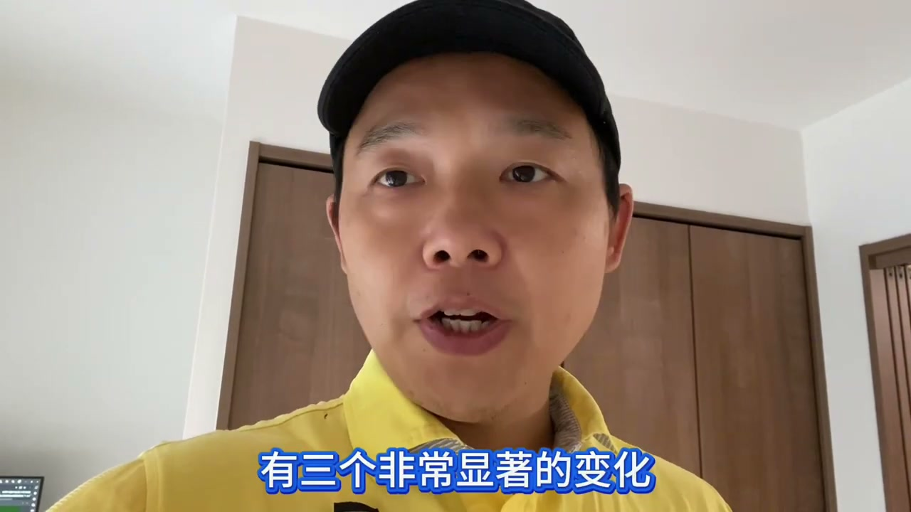
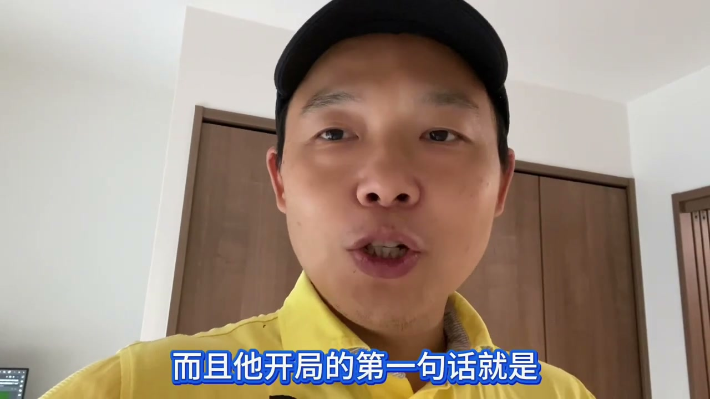
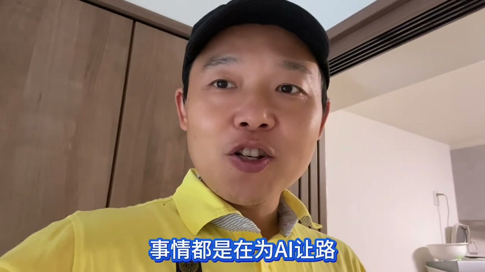

之前写过AI怎么把隔壁部门的活抢走，又怎么反过来变成烂摊子甩回我手里。这次轮到年终考核了——而且这次是真的把我吓得不轻。
先说结论：考核过了，但整个过程比往年惊心动魄得多。
随着Anthropic的Claude Code、Codex这些AI编程助手持续融入日本IT工作，最先被挤压的是低端的初级技术者，慢慢的就开始挤压高端技术者的生存空间。
从整个大环境来看，有三个非常显著的变化：第一，企业端对IT外包项目的需求大量降低——他们会去招正社员带着AI工具做项目，而不是再派给派遣会社。第二，企业招人这一块，低端技术者的需求显著减少，至少砍了70%到80%不止；高端的需求在增多，但他们要的是真正的高端。

所以之前很多在派遣行业里"不上不下"的技术者，现在处于一个什么状态？拼命挤压自己的单价，要么就是待机等等这种情况。
在这个大背景下，这一年的年终考核，我其实是有点惴惴不安的。而且这次评估的过程比往年长了很多——以前8月份就该出结果了，但今年到了上周，我的主管才找我面谈。
他开局的第一句话就是：
"老蔡你也知道AI编程助手什么什么什么……"

就这么一句话说出来，我的心里瞬间哇凉哇凉的——这个情况有点不对，公司是不是有什么想法？我已经开始自己脑补后续对策了：比如做一个"AI超级个体"，自己去做一些东西，正好利用这段时间把日语N2N1好好搞一下……
结果主管话锋一转：
"你的专业性还有你的经验，在这半年中都得到了很好的体现。"
最后结论是考核过关了。想涨薪资什么的，你就不要太想了，能保持住就不错了。其实呢，我也没想着要涨薪资，真的。
主管还顺带提醒我，把日语好好提升一下，所以最近也在准备日语的学习，这也是非常重要的一块。
但我其实很吐槽一点：连软件开发都能被AI搞定了，为什么多语言之间的互通，在AI时代居然还搞不定，还要我们自己去学日语？这是我深深吐槽的地方——不过所谓入乡随俗，你要想在一个国家生活工作，语言终究是逃不掉的一件事，这个我也会全力以赴去做。
后续我会把自己学习日语过程中的一些东西，软件化、数据化之后，提供给后来想要的一些人——这也是我在工作之外，另外想做的一件事。
最后聊到后续工作方向，主管直接说：后续因为大家都知道是用AI干活了嘛，那你的项目要做到让一个AI上来之后就能快速继续干活，就这么一个目标。
这一点让我感到比较悲凉——其实你做的每一件事情，都是在为AI让路：

让AI去写文档，让AI去写测试用例，让AI去写代码。所有这些东西做完之后，其实不是准备给人看的，也不是准备留给人去做的，而是不断优化这个流程，把相关内容交给新的AI，能够快速接上手——这是这次考核里我感触最深的一点。
好了，在AI时代日本IT整体环境这么不好的情况下，我很佩服的一位华人老大哥，他在26号在品川有一场华人的线下招聘会，感兴趣的朋友可以关注一下。
视频里聊得更细，感兴趣可以点开看看。